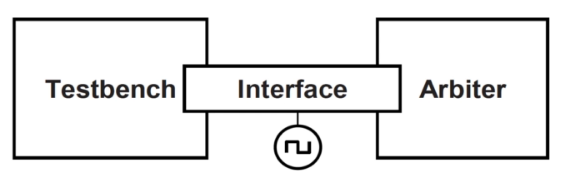

input clk, rstn;
input [31:0] data_i; // 上级送来的数据
input valid_i; // 上级送来的数据有效（valid）信号
input ack_i; // 下级送来的读有效信号
output [31:0] data_o; // 输出下级数据
output [5:0] margin; // 输出fifo余量
output ready_o; // 输出上级可接收（ready）信号
output valid_o; // 输出下级数据有效（valid）信号
output req_o; // 输出下级请求读取信号
logic [5:0] wr_pointer, rd_pointer; // 6位指针，最高位用来表示写地址比读地址低的情况
logic [31:0] mem [31:0]; //32个32 bit寄存器
logic full, empty;
logic [5:0] data_cnt;
assign full = {!wr_pointer[5], wr_pointer[4:0]} == rd_pointer; // 满信号
assign empty = wr_pointer == rd_pointer; // 空信号
assign data_cnt = 6'd32 - (wr_pointer - rd_pointer); // 余量
assign margin = data_cnt;
assign ready_o = !full;
assign req_o = !rstn? 1'b0 : !empty;
always_ff @(posedge clk or negedge rstn) begin
if (!rstn) wr_pointer <= 6'b00_0000;
else if (valid_i & ready_o) wr_pointer <= wr_pointer + 1'b1;
else wr_pointer <= wr_pointer;
end
always_ff @(posedge clk or negedge rstn) begin
if (!rstn) rd_pointer <= 6'b00_0000;
else if (req_o & ack_i) rd_pointer <= rd_pointer + 1'b1;
else rd_pointer <= rd_pointer;
end
always_ff @(posedge clk or negedge rstn)begin
if (!rstn) begin
data_o <= 32'h0000_0000;
valid_o <= 1'b0;
end
else if (req_o & ack_i) begin
data_o <= mem[rd_pointer[4:0]];
valid_o <= 1'b1;
end
else begin
data_o <= 32'h0000_0000;
valid_o <= 1'b0;
end
end
always_ff @(posedge clk) begin
if (rstn & valid_i & ready_o) mem[wr_pointer[4:0]] <= data_i;
end
状态机设计
input clk, rst
input req_0, req_1, req_2; //上级请求request信号
output ack_0, ack_1, ack_2; //返回上级acknowledge信号
parameter IDLE = 3'b000, GRANT0 = 3'b001, GRANT1 = 3'b010, GRANT2 = 3'b100;
logic [2:0] state, next_state;
always_ff @(posedge clk) begin
if (reset) state <= IDLE;
else state <= next_state;
end
always_comb begin
case(state)
IDLE: begin
if (req_0) next_state = GRANT0;
else if (req_1) next_state = GRANT1;
else if (req_2) next_state = GRANT2;
else next_state = IDLE;
end
GRANT0: begin
if (req_1) next_state = GRANT1;
else if (req_2) next_state = GRANT2;
else if (req_0) next_state = GRANT0;
else next_state = IDLE;
end
GRANT1: begin
if (req_2) next_state = GRANT2;
else if (req_0) next_state = GRANT0;
else if (req_1) next_state = GRANT1;
else next_state = IDLE;
end
GRANT2: begin
if (req_0) next_state = GRANT0;
else if (req_1) next_state = GRANT1;
else if (req_2) next_state = GRANT2;
else next_state = IDLE;
end
endcase
end
assign {ack_2, ack_1, ack_0} = state;
interface 可以定义端口，双向信号，可以使用 initial 和 always，也可以定义 function 和 task

interface arb_if (input bit clk);
logic [1:0] grant, request;
logic rst;
endinterface
module arb(arb_if arbif);
...
always_ff @(posedge arbif.clk or posedge arbif.rst) begin
if (arbif.rst)
arbif.grant <= 2'b00;
else
arbif.grant <= next_grant;
end
...
endmodule
module test (arb_if arbif);
...
initial begin
@(posedge arbif.clk) arbif.request <= 2'b01;
repeat (2) @(posedge arbif.clk);
if (arbif.grant !- 2'b01) $display("ERROR");
$finish;
end
endmodule
module top;
bit clk;
always #5 clk = ~clk;
arb_if arbif(clk);
arb a1 (arbif);
test t1(arbif);
endmodule
方法1
module top_module (
input clk,
input reset, // Synchronous reset
input s,
input w,
output z
);
parameter A = 0, B = 1, C = 2, D = 3;
logic [2:0] state, next_state;
logic [1:0] flag;
always_ff @(posedge clk) begin
if (reset) state <= A;
else state <= next_state;
end
always_comb begin
case(state)
A: next_state = s? B : A;
B: next_state = C;
C: next_state = D;
D: next_state = B;
endcase
end
always_ff @(posedge clk) begin
if (reset) flag <= 2'b00;
else
case(state)
B: flag <= w? {flag[1], 1'b1} : flag;
C: flag <= w? {1'b1, flag[0]} : flag;
D: flag <= 2'b00;
default: flag <= flag;
endcase
end
always_ff @(posedge clk) begin
if (reset) z <= 0;
else if (state == D & ((flag == 2'b11 & !w) | (^flag == 1 & w))) z <= 1;
else z <= 0;
end
endmodule
方法2
module top_module (
input clk,
input reset, // Synchronous reset
input s,
input w,
output z
);
parameter A = 0, B = 1, C = 2, D = 3;
logic [2:0] state, next_state;
logic [1:0] count;
always_ff @(posedge clk) begin
if (reset) state <= A;
else state <= next_state;
end
always_comb begin
case(state)
A: next_state = s? B : A;
B: next_state = C;
C: next_state = D;
D: next_state = B;
endcase
end
always_ff @(posedge clk) begin
if (reset | next_state == B) count <= 2'b00;
else if (w) count <= count + 1'b1;
else count <= count;
end
logic [1:0] final_count;
assign final_count = count + w;
always_ff @(posedge clk) begin
if (reset) z <= 0;
else if (state == D & final_count == 2) z <= 1;
else z <= 0;
end
endmodule
@(posedge clk) $display(); 和 @(posedge clk); $display();S 有区别吗
clocking bus @(posedge clock1);
default input #10ns output #2ns;
input data, ready, enable; //在时钟上升沿10ns前做采样
output negedge ack; //在时钟下降沿2ns后驱动
input #1step addr; //自身定义的采样事件，clock1上升沿前的一个时间片采样
endclocking
clocking 可以定义在 interface, module, program 中clocking 中列举的信号应该由 interface 或其他声明 clocking 的模块定义clocking 中如果没有定义 default input/output 会默认在一个时间片之前采样，一个时间片之后驱动如果有一个clocking ck @(posedge clk); ... endclocking，那么@ck等价于@ (posedge clk)）